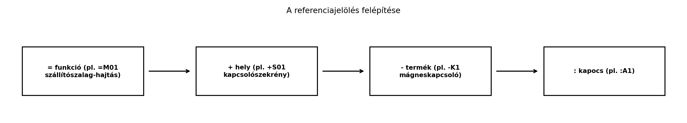

Statikus változat (mint a PDF-ben)
Egy villanyszerelő sokszor egyedül készít el egy elosztót, egy motorvezérlést vagy egy teljes lakáshálózatot. A munka végeztével azonban nem elég, hogy a berendezés működik: a következő szerelőnek, a felülvizsgálónak, a karbantartónak és a megrendelőnek is értenie kell, mit lát. A dokumentáció nélküli berendezés olyan, mint egy könyv tartalomjegyzék és oldalszámok nélkül: lehet benne keresni, de drága és balesetveszélyes. A rosszul feliratozott kismegszakító vagy a hiányzó kapcsolási rajz miatt a hibakeresés órákig tarthat, egy tévesen feltételezett bekötés pedig komoly baleset forrása lehet.
Motiváló helyzet. Egy társasház lépcsőházi elosztójában időrelé hibát kell keresni. A régi szerelő nem hagyott rajzot, a vezetékek színe vegyes, a sorkapcsokon nincs felirat. A hibakeresés három órát vesz igénybe, mert a szerelő minden áramkört feszültségmentesítés után kézzel követ végig. Ugyanez a munka friss, pontos dokumentációval kb. fél óra lett volna.
Definíció. A szerelési dokumentáció azoknak a rajzoknak, jegyzékeknek, utasításoknak és jegyzőkönyveknek az összessége, amelyek leírják egy villamos berendezés felépítését, bekötését, működését, valamint az üzembe helyezés, ellenőrzés és karbantartás során végzett munkákat.
A gyakorlatban a következő elemeket kell megkülönböztetni:
Összefüggés. A tervező kapcsolási és elrendezési rajzaiból dolgozik a szerelő; a szerelés közbeni változásokat ezekre vezeti rá, így áll elő a kiviteli (megvalósulási) dokumentáció. A feliratok a rajzok jelöléseire utalnak, a kezelési utasítás pedig a feliratokhoz kapcsolódik. Ha bármelyik hiányzik, a lánc megszakad.
Feliratozás a gyakorlatban. A feliratokat nem kézzel írt filccel, hanem tartós, kopásálló jelölőkkel készítjük. Az alábbi ábrán a hat leggyakoribb eszköz látható: az 1 karakterenként rápattintható jelölőgyűrű és a 2 nyomtatott jelölőhüvely az érvégre kerül (még a csupaszolás és az érvéghüvely felhelyezése előtt); a 3 kábeljelölő zászlót kötegelővel a kábel köpenyére rögzítjük, a kábel mindkét végén ugyanazzal a jellel; a 4 sorkapocs-jelölés csoportjelből (-X1) és kapocssorszámból áll; az 5 készülékcímke a készüléken és mellette, a szerelőlemezen vagy a kábelcsatorna fedelén is ott van, hogy készülékcsere után is megmaradjon; a 6 kismegszakító-feliratcsík a jelet és a rendeltetést (világítás, aljzat, bojler) is mutatja.
A tipikus hiba a csak a készülékre ragasztott címke (csere után eltűnik) és a csak az egyik kábelvégen lévő jel. A felirat szövege mindig a rajz referenciajelével egyezzen. A HTML-kiadásban a jelölőkre mutatva kiemelődik az adott eszköz és a használatának szabálya.
A villamos berendezés elemeinek egyértelmű azonosítására nem elég a „bal oldali mágneskapcsoló” vagy „az a biztosíték” megnevezés. Referenciajelölésnek nevezzük azt a szabványos kódrendszert, amely a berendezés minden elemét egyedi azonosítóval látja el.
Szabály. A termékjelölés egy betűkódból (az elem
fajtája: Q kapcsoló, F védelem, K mágneskapcsoló, M motor, T
transzformátor, S vezérlőkapcsoló, H jelzőlámpa, X sorkapocs) és
sorszámból áll (K1, Q2); a készülék egy kapcsát kettősponttal fűzzük
hozzá (-K1:A1, -K1:13). A könyvben rövidített írásmódként a
K1 / 13–14 alak is szerepel: ez a K1 13-as és 14-es kapcsa
közötti érintkezőt jelenti (a szabványos alakban -K1:13 és -K1:14,
ellenőrizendő: MSZ EN IEC 81346-1). A teljes referencia az áramkörben
egyértelmű.
Példa:
K1 – az első mágneskapcsolóK1 / A1–A2 – a K1 tekercs kapcsaiK1 / 13–14 – a K1 egyik záró segédérintkezőjeQ2 – a második megszakítóF3 – a harmadik biztosítóMegjegyzés. A referenciajelölés nemcsak a rajzon,
hanem a készüléken lévő feliraton is megjelenik. A szerelőnek a rajzot
és a valóságot össze kell tudnia kapcsolni: ha a rajzon K1
szerepel, a szekrényben is meg kell találni a K1 feliratú
készüléket.
Rajz – valóság – mérés hármas. A referenciajelölés a kapocsjelöléssel együtt éppen ezt a hármast teszi ellenőrizhetővé: a rajzon látod a bekötést, a készüléken látod a feliratot, a mérőpontot a felirat alapján azonosítod.
Az alábbi ábra ezt egy kis vezérlési részleten mutatja. Balra a kapcsolási rajz: a -X1:1 kapocsról a -K1 tekercs A1 kapcsára, az A2-ről a -X1:2-re, a -K1 13–14 záróérintkezőjéről a -X1:3-on át a -H1 jelzőlámpára megy a vezeték. Jobbra ugyanez a szerelőlemezen: a mágneskapcsolón a -K1 címke, a sorkapcsokon a -X1 csoportjel és az 1–3 sorszám, a vezetékek két végén pedig jelölőhüvely, amely itt a vezeték túlsó végének címét mutatja (célcímes jelölés: a K1 felőli végen „-X1:1”, a sorkapocs felőli végen „-K1:A1”). Ha a hibakeresésnél a -K1:14 felől érkező vezetéket kell ellenőrizni, a mérőcsúcs a felirat alapján megtalált -X1:3 kapocsra kerül – feszültségmentesítés után, folytonosságméréssel.

A jelölési rend (célcímes vagy vezetékszámos) a terv és az üzemi szabály szerint választandó; a lényeg, hogy egy berendezésen belül következetes legyen, és a jelek betűre megegyezzenek a rajzzal. A HTML-kiadásban a rétegek ki-be kapcsolhatók: a jelölőhüvelyeket kikapcsolva látszik, miért tart órákig a hibakeresés felirat nélkül.
A referenciajelölés részletes rendszerét az MSZ EN 81346 szabványsorozat írja le. Három nézőpontot különböztet meg: = funkció-orientált (mit csinál), + hely-orientált (hol van), - termék-orientált (mi az); a kapocs jele :. A három nézőpont egymás mellett is szerepelhet. (ellenőrizendő: MSZ EN IEC 81346-1 aktuális kiadás és magyar jelölési változatok)
Megjegyzés a betűjelekről. A könyv a hazai gyakorlatban elterjedt betűjeleket használja (K mágneskapcsoló, H jelzőlámpa). Az MSZ EN 81346-2 újabb osztályozása szerint a főáramkört kapcsoló mágneskapcsoló jele Q (QA), a jelzőlámpáé P (PF); a terven mindig a rajzjegyzék/készülékjegyzék a mérvadó (ellenőrizendő: MSZ EN IEC 81346-2 aktuális kiadás).

A kivitelezés során a munkafolyamatokat és az ellenőrzéseket nyomon kell követni. Az építési napló a kivitelezés hivatalos dokumentuma, amelybe a kivitelező, a műszaki ellenőr és az építtető bejegyzéseket tehet. A napló vezetésének pontos szabályait jogszabályok írják elő, és a gyakorlatban már elektronikus építési napló (e-napló) is használatos.
Figyelem. Az építési napló vezetése nem adminisztrációs teher, hanem a minőségbiztosítás eszköze. Ha egy hiba később peres üggyé válik, a napló bejegyzései bizonyítják, hogy a szerelő mit mikor végzett el, és milyen ellenőrzések történtek. A villanyszerelő saját munkájának bejegyzésével védi magát: „feszültségmentesítés megtörtént, a kötések meghúzva, a szigetelési ellenállás mérése megtörtént”.
Szabály. Az építési naplóba be kell jegyezni legalább: a munkavégzés helyét és idejét, a munkavégzés tartalmát, az ellenőrzések eredményét, az észrevételeket és a védelmi intézkedéseket. A pontos formai követelményeket a hatályos építésügyi jogszabályok tartalmazzák. (ellenőrizendő: aktuális jogszabály)
A munka befejezésekor a berendezést át kell adni a megrendelőnek. Az átadás-átvétel nem egyetlen aláírás, hanem folyamat:
Továbbvitt eredmény. A mérési jegyzőkönyv azonos logikáját és formai elemeit használjuk a Minőségbiztosítás és szerelői ellenőrzés, az Elosztó szerelése, kapcsolási rajz és feliratozás és a Jegyzőkönyv, szabványossági felülvizsgálat és hibakeresés alfejezetekben. Az ipari fogyasztói berendezések csatlakoztatásakor a csatlakozási dokumentációt a Csatlakozási hely és ipari fogyasztói berendezés kialakítása alfejezetben tárgyaljuk.
Cél: a kész berendezéshez hiánytalan dokumentációs csomag összeállítása.
Biztonsági korlát. A dokumentáció összeállításához szükséges helyszíni ellenőrzés (feliratok, bekötés összevetése) feszültségmentesítés után, az öt biztonsági szabály szerint végezhető; feszültség alatti mérést csak jogosult személy végezhet.
A dokumentációs csomag ellenőrzőlistája:
Szabvány. A villamosipari dokumentációk és rajzok készítésére vonatkozó szabályokat az MSZ EN 61082 szabványsorozat, a rajzjeleket az MSZ EN 60617, a referenciajelölést az MSZ EN 81346 szabványsorozat tárgyalja. A mérési jegyzőkönyvek tartalmát a hibavédelem és az ellenőrzés fejezetek szabványai határozzák meg. (ellenőrizendő: aktuális szabványkiadás és pontos szám) A kivitelezői nyilatkozatban a kivitelező kijelenti, hogy a munkát a vonatkozó MSZ HD 60364 és egyéb előírások szerint végezték (ellenőrizendő: hatályos jogszabály).
Valós eset. Egy felújított irodaház elosztószekrénye hibátlanul működött, de a kivitelező elmulasztotta feliratozni a kismegszakítókat. Két héttel az átadás után az egyik iroda aljzatkörén zárlat keletkezett. A karbantartó a felirat nélküli elosztóban nem tudta azonosítani az adott kismegszakítót, ezért a főmegszakítót kapcsolta le, ami az egész irodaházat áramtalanította. A javítás során kiderült, hogy a kismegszakítók feliratozásán kívül a kiviteli rajz sem készült el. A tanulság: a feliratok és a kiviteli rajz nem kényelmi, hanem biztonsági elem. Az ilyen esetek elkerülése miatt kell a dokumentációs csomagot már a szerelés során, nem utólag összeállítani.
Hiba 1: A kiviteli rajzot nem vezetik. A szerelő a tervben szereplő vezetékutat megváltoztatja, de a rajzon nem jelöli. A későbbi javítás során a szerelő rossz helyen fúr, mert a rajz szerint ott nincs vezeték. Helyes gyakorlat: minden változást azonnal rávezetni a rajzra, és a módosított rajzot az átadási dokumentációhoz csatolni.
Hiba 2: A feliratok és a rajz nem egyeznek. A rajz szerint a Q2 kismegszakító védi a bojlerkört, a valóságban a Q3. A hibakeresés során a szerelő tévesen kapcsol le. Helyes gyakorlat: a feliratozást a rajz alapján kell elkészíteni, és az átadás előtt tételesen ellenőrizni.
Hiba 3: A mérési jegyzőkönyvet nem töltik ki teljesen. A szerelő elvégzi a mérést, de az eredményt nem rögzíti, vagy a határértéket nem ellenőrzi. Később egy hiba esetén nem lehet bizonyítani, hogy a berendezés az átadáskor megfelelt. Helyes gyakorlat: minden mérést azonnal, olvashatóan, a dátumozott jegyzőkönyvben rögzíteni, és a határértékkel összevetni.
K1 / 13–14 referencia?Sorold fel a szerelői dokumentáció elemeit, és írd le mindegyiknek egy-egy mondatban a funkcióját.
Magyarázd el, mi a különbség a terv és a kiviteli rajz között. Adj példát arra, hogy mi kerülhet a kiviteli rajzra a tervhez képest.
Egy motorvezérlésben a rajz szerint K1 mágneskapcsoló,
Q1 megszakító, F1 hőkioldó, M1
motor van. Hogyan jelölnéd a K1 tekercsét és egyik záró
segédérintkezőjét? Rajzold le szövegesen a referencia-hierarchiát.
Egy átadási jegyzőkönyvben a szerelő azt írta: „Minden rendben.” Milyen hiányosságok vannak ebben a bejegyzésben? Mit kellene tartalmaznia egy szakszerű jegyzőkönyvnek?
Egy lakáselosztó átadása előtt a megrendelő kéri, hogy „ne kelljen papírmunka, csak adjuk át a kulcsot”. Hogyan érvelnél amellett, hogy a dokumentáció a megrendelő biztonságát szolgálja? Fogalmazz meg három konkrét érvet.
Egy kész elosztószekrényben a kismegszakítók feliratai hiányoznak. Írj egy ellenőrzőlistát, amely alapján a feliratozást elvégzed. Hogyan ellenőriznéd, hogy a feliratok megfelelnek a kiviteli rajznak?
K1 az első mágneskapcsoló, a 13–14 pedig
annak záró (NO) segédérintkezője. Tehát a rajzon a K1 mágneskapcsoló
13–14 kapcsai közötti érintkezőt jelenti.1. feladat
A szerelői dokumentáció elemei:
- Terv: a tervezett állapotot rögzíti, a kivitelezés
alapja.
- Kiviteli rajz: a megvalósult állapotot rögzíti,
tartalmazza a változásokat.
- Kapcsolási rajz: a készülékek villamos kapcsolatát
mutatja.
- Kezelési utasítás: a felhasználónak szóló működtetési
leírás.
- Feliratok: a készülékek azonosítását
szolgálják.
- Mérési jegyzőkönyv: a védelmi mérések eredményeit
tartalmazza.
- Kivitelezői nyilatkozat és első ellenőrzési
jegyzőkönyv: a szabványos kivitelezést és a vizsgálatok
eredményét igazolja; a termékek gyártói megfelelőségi nyilatkozata külön
irat (ellenőrizendő: hatályos jogszabály).
- Átadás-átvételi jegyzőkönyv: a felek általi átadást
és az esetleges hibákat rögzíti.
2. feladat
A terv a tervező által készített, a jövőbeli állapotot mutató rajz. A
kiviteli rajz a munka befejezése után a ténylegesen megvalósult
állapotot mutatja, és tartalmazza mindazt, ami a tervhez képest
változott. Például: ha a vezeték más útvonalon halad, ha a kismegszakító
típusa más, ha egy kapocs más pozícióba került, ezt a kiviteli rajzon
fel kell tüntetni.
3. feladat
K1 / A1–A2 a tekercs, K1 / 13–14 a záró
segédérintkező. A referencia-hierarchia szöveges leírása:
funkció =, hely +, termék -,
kapocs : – a három nézőpont egymás mellett szerepel.
A konkrét esetben: =M01+S01-K1:A1 (a K1 tekercsének A1
kapcsa; a K1 a +S01 kapcsolószekrényben, az =M01 hajtás funkciójához
tartozik). A záró segédérintkező két kapcsa teljes referenciával:
=M01+S01-K1:13 és =M01+S01-K1:14.
4. feladat
A „Minden rendben” bejegyzés túl szubjektív, nem tartalmaz konkrét
mérési eredményeket, dátumot, a berendezés azonosítását, az ellenőrzött
elemeket, a határértékeket, és nem derül ki, hogy ki és mikor végezte a
munkát. Szakszerű jegyzőkönyvben fel kell tüntetni a mérések típusát, a
mért értékeket, a határértéket, az eredményt (megfelel/nem felel meg), a
dátumot, az aláírást és a berendezés azonosítását.
5. feladat
Három érv:
- A feliratok nélkül a későbbi hibakeresés és karbantartás
balesetveszélyes, mert a szerelő tévesen kapcsolhat le más
áramkört.
- A mérési jegyzőkönyv bizonyítja, hogy a berendezés a szabványok
szerint készült, és a megrendelő vitás esetben jogosult arra
hivatkozni.
- A kezelési utasítás nélkül a felhasználó nem tudja biztonságosan
működtetni a berendezést, és egy hiba esetén nem tudja, kit hívjon. A
dokumentáció tehát nem papírmunka, hanem a biztonságos üzemeltetés
része.
6. feladat
Ellenőrzőlista a kismegszakítók feliratozásához:
1. Azonosítom a kismegszakító Q-jelét a kiviteli rajzon.
2. Megnézem, melyik áramkört védi (pl. Q2 → Mosogatógép aljzat).
3. Felírattal vagy címkével megjelölöm a kismegszakítót a rajz
szerint.
4. Ellenőrzöm, hogy a felirat egyezik a rajz jelölésével.
5. Meggyőződöm arról, hogy a felirat a későbbi hibakereséshez is
értelmezhető (pl. ne csak „Q2” legyen, hanem „Q2 – Mosogatógép”).
6. A feliratozás után a rajzot frissítem, ha változott.
Azonosítás méréssel (jogosult személy vagy oktató
felügyelete mellett): az öt szabály szerint egyenként kikapcsolom a
kismegszakítókat, és a kör végpontjain (aljzat, lámpahely) kétpólusú
feszültségvizsgálóval ellenőrzöm, hogy valóban feszültségmentes lett-e;
a vizsgálót előtte és utána ismert feszültségen kipróbálom (fázisceruza
nem alkalmas). Ahol az eredmény eltér a kiviteli rajztól, a rajzot
javítom, nem a feliratot igazítom a rajzhoz. Feszültségmentes állapotban
a gyűjtősínt és a kimenő vezetékeket folytonosságméréssel is
összevethetem. Így a rajz–valóság–mérés hármas zárul.
A szerelői dokumentáció nem adminisztráció, hanem a biztonságos
üzemeltetés és a későbbi hibakeresés alapja. A kiviteli rajz a
megvalósult állapotot rögzíti; minden változást ide kell rávezetni. A
kapcsolási rajz a logikai kapcsolatot mutatja, a feliratok a készülékek
és kapcsok egyértelmű azonosítását szolgálják. A referenciajelölés (pl.
K1 / 13–14) a rajz, a valóság és a mérés összekapcsolását
teszi lehetővé; rendszerét az MSZ EN 81346 szabványsorozat írja le. Az
építési napló vagy e-napló a kivitelezés hiteles dokumentuma, amely a
szerelő munkáját is védi. Az átadás-átvétel során a mérési jegyzőkönyv,
a kivitelezői nyilatkozat és a kezelési utasítás együttesen igazolják a
berendezés szabványosságát. A dokumentáció hiánya vagy pontatlansága
balesetveszélyes hibakereséshez és jogvitákhoz vezethet, ezért a
dokumentációs csomagot már a szerelés során, folyamatosan kell
készíteni. Továbbvitt eredmény: a mérési jegyzőkönyv és
a dokumentációs ellenőrzőlista a Minőségbiztosítás
és szerelői ellenőrzés, az Elosztó szerelése,
kapcsolási rajz és feliratozás, a Jegyzőkönyv,
szabványossági felülvizsgálat és hibakeresés és a Csatlakozási hely és ipari fogyasztói berendezés
kialakítása alfejezetekben tér vissza.
A szöveg elsősorban a vonatkozó magyar és európai szabványok együttesére, valamint a kivitelezési gyakorlatra épül. A konkrét szabványszámok (MSZ EN 81346, MSZ EN 61082, MSZ HD 60364 sorozat) és a jogszabályi előírások (e-napló, építési napló) a kiadás előtt ellenőrizendők. A referenciajelölés részletes kódrendszerét és a mérési jegyzőkönyv formai követelményeit az aktuális szabványkiadások és a hatályos jogszabályok szerint kell pontosítani.